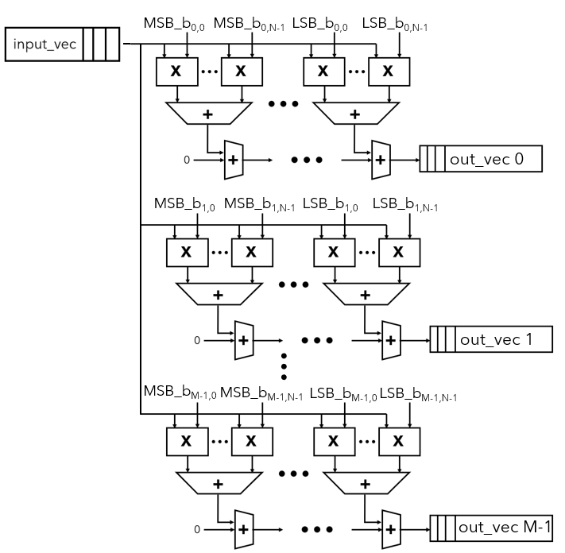
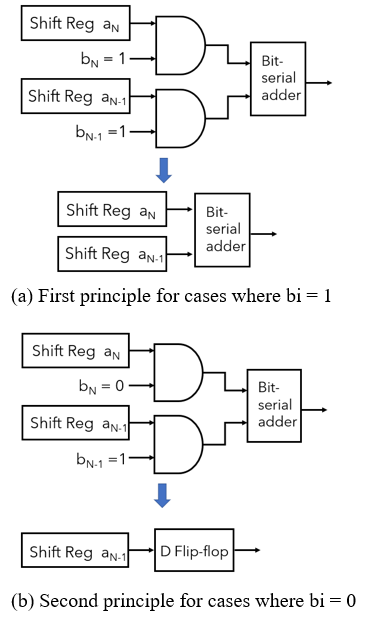
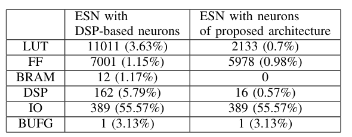

Bit-serial reservoir neuron
Updating the reservoir states of an echo state network (ESN) is dominated by multiply-accumulate operations with a large, sparse, fixed weight matrix, which costs many DSP blocks and LUTs on an FPGA. This work builds a reservoir-node architecture that replaces DSP-based multipliers with bit-serial logic hard-wired to the fixed weights, plus a simplified tanh activation, and applies it to an ESN for OFDM symbol detection.
Design
Bit-serial building blocks
The basic unit is a bit-serial adder: a full adder, a D flip-flop holding the carry, and shift registers for the two operands and the sum; a subtractor is obtained by inverting one operand and setting the initial carry to 1. Bit products are formed with AND gates and summed by a tree of bit-serial adders, built from LUTs and registers rather than the FPGA's DSP blocks.
Constant propagation of fixed, sparse weights
Because ESN weights never change, each weight bit is a constant in the multi-bit by single-bit multiplier. Where a weight bit is 1, the AND gate is removed and the input shift register feeds the adder directly; where it is 0, the adder is replaced by a D flip-flop, so zero weights and zero bits cost almost no logic.
Multi-bit and vector-matrix multiplier
Multi-bit weights are handled by one multi-single multiplier per weight bit, chained through bit-serial adders with a one-clock offset so each partial product is automatically weighted by its bit position. One such multiplier per row of the extended weight matrix produces all reservoir pre-activations in parallel.
Canonical signed digit (CSD) weights
Weights are recoded into CSD form (digits 1, 0, -1), which minimises the number of non-zero digits, e.g. 11110 becomes 100000 - 000010. Each CSD number is split into two unsigned numbers whose products are subtracted, which also lets the unsigned-weight multiplier handle signed weights.
Simplified tanh activation
A hyperbolic tangent activation is kept for accuracy on OFDM symbol detection, but it is realised with simple DSP units instead of the large DSP groups used in the earlier DSP-based ESN design.


Results
- LUTs reduced from 11,011 to 2,133 (80.7% lower, as reported) versus the prior DSP-based ESN, both synthesised for the Virtex-7 VC707.
- DSP blocks reduced from 162 to 16 and BRAM from 12 to 0 versus the DSP-based ESN.
- Flip-flops reduced from 7,001 to 5,978 (14.8% lower, as reported).
- Throughput of 64 bits per 0.83 µs versus 64 bits per 0.46 µs for the DSP-based design, a 44.5% throughput loss accepted for the hardware savings.
- The bit-serial vector-matrix multiplier delivers its result after 44 clock cycles, set by the input and weight bit widths and the input vector length.
- Evaluated on an ESN with 4 inputs, 16 reservoir nodes and 2 outputs for OFDM symbol detection, written in SystemVerilog and synthesised with Vivado 2019.1.3.

Publication